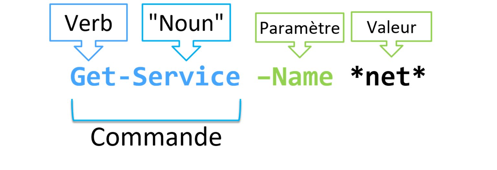

Exécuter des commandes
Syntaxe des commandes
 Toutes les commandes PowerShell, appelés CmdLets se composent d’un verbe et d’un nom séparé par un tiret. Le résultat de la commande peut être influencer par l'ajout de paramètres.
Par exemple, la commande Get-Service exécutée telle quelle, renverra l'ensemble des services.
Tandis que la commande Get-Service -Name *Net* ne renverra que les services contenant net dans leur nom.
Chaque verbe correspond à un type d'action précis :
| Verb | Action |
|---|---|
| GET | Requeter |
| SET | Configurer / Définir |
| IMPORT | Importer |
| etc ... | ... |
Get-Verb permet d'obtenir la liste des verbs approuvés par les best-practices Powershell
Les 3 commandes indispensables
Get-Command
Get-Command permet de rechercher une commande en fonction de nom, de son verb ou de son module d'appartenance.
CommandType Name Version Source
----------- ---- ------- ------
Cmdlet Debug-Process 7.0.0.0 Microsoft.PowerShell.Management
Cmdlet Enter-PSHostProcess 7.3.4.500 Microsoft.PowerShell.Core
Cmdlet Exit-PSHostProcess 7.3.4.500 Microsoft.PowerShell.Core
Cmdlet Get-Process 7.0.0.0 Microsoft.PowerShell.Management
Cmdlet Get-PSHostProcessInfo 7.3.4.500 Microsoft.PowerShell.Core
Cmdlet Start-Process 7.0.0.0 Microsoft.PowerShell.Management
Cmdlet Stop-Process 7.0.0.0 Microsoft.PowerShell.Management
Cmdlet Wait-Process 7.0.0.0 Microsoft.PowerShell.Management
Get-Help
La commande Get-Help permet d'obtenir une aide sur le fonctionnement d'une commande.
Elle vous permet d'identifier les paramètres attendues, lesquels sont obligatoires ou non, le type de valeurs à leur envoyer, etc ...
NAME
Get-Service
SYNTAX
Get-Service [[-Name] <string[]>] [-DependentServices] [-RequiredServices] [-Include <string[]>] [-Exclude <string[]>] [<CommonParameters>]
Get-Service -DisplayName <string[]> [-DependentServices] [-RequiredServices] [-Include <string[]>] [-Exclude <string[]>] [<CommonParameters>]
Get-Service [-DependentServices] [-RequiredServices] [-Include <string[]>] [-Exclude <string[]>] [-InputObject <ServiceController[]>] [<CommonParameters>]
ALIASES
gsv
REMARKS
Get-Help cannot find the Help files for this cmdlet on this computer. It is displaying only partial help.
-- To download and install Help files for the module that includes this cmdlet, use Update-Help.
-- To view the Help topic for this cmdlet online, type: "Get-Help Get-Service -Online" or
go to https://go.microsoft.com/fwlink/?LinkID=2096496.
L'ajout du paramètre -Online à la commande Get-Helpvous envoie sur la page Microsoft Docs correspondante.
Get-Member
Get-Help vous permet d'obtenir "la carte d'identité" d'un objet obtenu par l'éxécution d'une commande ou stocké dans une variable.
Elle vous permettra de connaitre:
- Son type
- Ses propriétés
- Ses méthodes
TypeName: System.Diagnostics.Process
Name MemberType Definition
---- ---------- ----------
Disposed Event System.EventHandler Disposed(System.Object, System.EventArgs)
ErrorDataReceived Event System.Diagnostics.DataReceivedEventHandler ErrorDataReceived(System.Object, System.Diagnostics.…
Exited Event System.EventHandler Exited(System.Object, System.EventArgs)
OutputDataReceived Event System.Diagnostics.DataReceivedEventHandler OutputDataReceived(System.Object, System.Diagnostics…
BeginErrorReadLine Method void BeginErrorReadLine()
BeginOutputReadLine Method void BeginOutputReadLine()
CancelErrorRead Method void CancelErrorRead()
CancelOutputRead Method void CancelOutputRead()
Close Method void Close()
CloseMainWindow Method bool CloseMainWindow()
Dispose Method void Dispose(), void IDisposable.Dispose()
Equals Method bool Equals(System.Object obj)
GetHashCode Method int GetHashCode()
GetLifetimeService Method System.Object GetLifetimeService()
GetType Method type GetType()
InitializeLifetimeService Method System.Object InitializeLifetimeService()
Kill Method void Kill(), void Kill(bool entireProcessTree)
Refresh Method void Refresh()
Start Method bool Start()
ToString Method string ToString()
| Verb | Description |
|---|---|
Get-Command |
Lister et chercher des commandes |
Get-Help |
Obtenir l'aide d'une commande |
Get-Member |
Connaitre le type, les propriétés et les méthodes d’un objet |